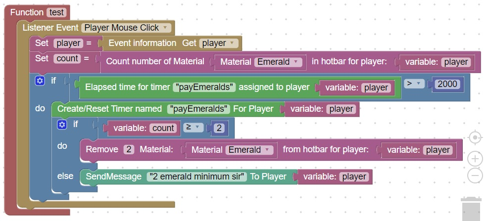

<H1>In Game methods for player payment</h1>
Iron Ingots, Gold Ingots, Emeralds, and Diamonds can be used as an exchange or payment for in-game items<br>
Here is a sample code that counts the number of emeralds and reduces them by 2 in the hotbar: <br>

 